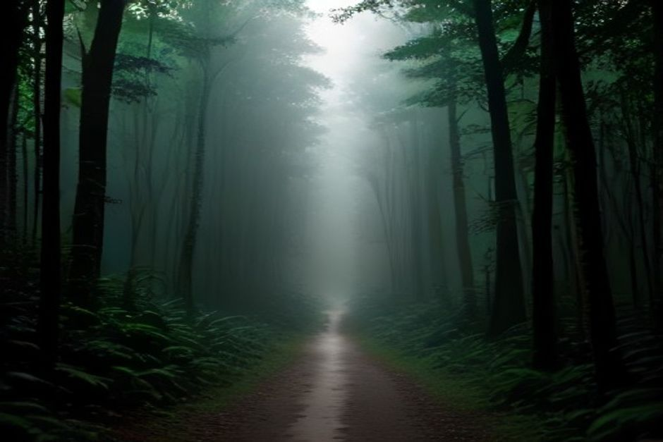
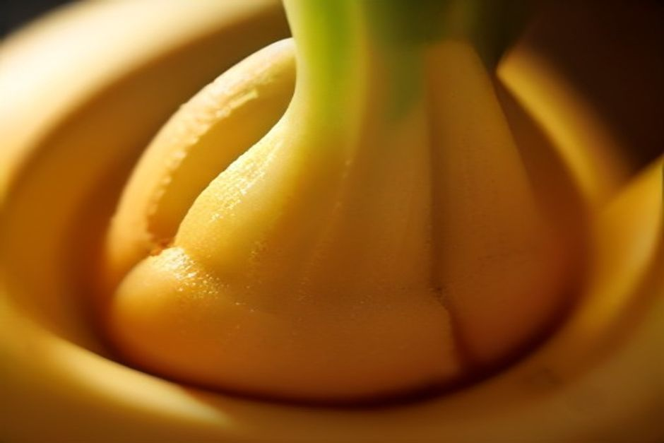

Wer zum ersten Mal eine Banane auf Madeira isst, merkt es sofort: Sie ist kleiner als die Banane vom Discounter, das Fruchtfleisch ist dichter und die Süße kräftiger. Hier lesen Sie, was die Banane von Madeira ausmacht, wo sie wächst, wo Sie Madeira-Bananen kaufen und probieren können und wie Sie die Plantagen ganz ohne Wanderschuhe sehen.
Banane von Madeira oder Supermarkt-Banane: der Unterschied in Kürze
Die meisten Bananen in deutschen, österreichischen und Schweizer Supermärkten sind große Cavendish-Bananen. Die Banana da Madeira ist kleiner, hat eine dünnere Schale, ein cremigeres Fruchtfleisch und ein konzentrierteres Aroma. Zwei Dinge spielen zusammen: der vulkanische Boden und das milde, subtropische Klima an der sonnigen Südküste.
Dazu kommt die Arbeitsweise. Die Parzellen sind zu klein und zu steil für Maschinen, also wird vieles von Hand gepflegt und geerntet. Das hält die Qualität hoch, bringt aber im Vergleich zu industriellen Plantagen anderswo bescheidene Erträge.

Wo wachsen die Madeira-Bananen?
Fast alle Plantagen liegen an der Südküste, in einem Streifen von Câmara de Lobos über Ribeira Brava, Ponta do Sol und Madalena do Mar bis nach Calheta. Das ist die wärmste und trockenste Seite der Insel, geschützt vor dem feuchteren Norden.
Die Terrassen beginnen fast auf Meereshöhe und steigen bis auf rund 300 Meter an. Bewässert werden sie über dasselbe Netz aus Levadas, das auch Weinberge und Gemüsegärten versorgt. Viele Erzeuger bewirtschaften weniger als einen Hektar, oft neben einem anderen Beruf. Es ist mühsame Landwirtschaft, und genau das sieht man den Hängen an.
Was bedeutet g.g.A. bei der Banana da Madeira?
Die Banana da Madeira trägt in der EU die geschützte geografische Angabe (g.g.A.). Den Namen dürfen nur Früchte tragen, die in den dafür vorgesehenen Gemeinden Madeiras nach festgelegten Standards angebaut, geerntet und verarbeitet wurden. Für Sie als Käuferin oder Käufer heißt das: Wo „Banana da Madeira“ draufsteht, soll auch Madeira drin sein.
Madeira-Bananen kaufen: Wo und wie?
Auf der Insel haben Sie mehrere Möglichkeiten, und alle sind einfach:
- Mercado dos Lavradores in Funchal: der bequemste Ort. Die Bananen liegen in kleinen Büscheln neben Cherimoya, Passionsfrucht und anderem Obst von denselben Terrassen der Südküste.
- Ehrlichkeitsstände an der Küstenstraße ER101: Erzeuger stellen ihre Ware selbst an die Straße. Ein paar Euro in die Dose, dafür eine Tüte frisch von der Pflanze.
- Restaurants und Bäckereien: Gebratene Banane gehört fast immer zur espetada, dem Rinderspieß. Außerdem lohnt sich der bolo de banana, ein dichter Bananenkuchen aus lokalen Bäckereien.
Ein Tipp aus der Praxis: Kaufen Sie wenig und oft. Wegen der geringeren Größe werden Madeira-Bananen schneller von fest zu überreif als importierte Bananen. Die Einheimischen horten deshalb keine ganzen Bunde.
Und zu Hause? Banane aus Madeira im Handel
Wer nach „Madeira-Bananen kaufen“ sucht, möchte meist wissen, ob es sie auch außerhalb der Insel gibt. Die Zahlen erklären, warum die Antwort „nur begrenzt“ lautet: Madeira hat rund 9.000 Hektar Bananenfläche und etwa 3.000 registrierte Erzeuger, und der weitaus größte Teil der Ernte verlässt die Insel. Er geht auf das portugiesische Festland und wird dort unter dem geschützten Namen verkauft.
Ob und wo Sie die Banana da Madeira in Deutschland, Österreich oder der Schweiz finden, kann ich Ihnen nicht verlässlich sagen. Achten Sie im Zweifel auf die Bezeichnung „Banana da Madeira“ und das g.g.A.-Zeichen. Am sichersten probieren Sie sie vor Ort, und dann in der Qualität, die Sie hier ohnehin bekommen: frisch und am selben Tag gekauft.
Bananenplantagen auf Madeira ansehen: vom Land und vom Wasser
Von der Straße aus sieht man die Terrassen nur in Ausschnitten, denn Bäume und Häuser nehmen die Sicht. Vom Wasser aus ist es anders: Zwischen Câmara de Lobos und Ribeira Brava stapeln sich die Bananenterrassen als schmale grüne Bänder den Hang hinauf, eingeklemmt zwischen Straße und Klippenrand. So begreift man, wie viel Arbeit in jeder Staude steckt.
Genau diesen Küstenabschnitt fährt der private Tagesausflug von Chifbay ab der Marina do Funchal, Ponton C. Das ganze Boot gehört nur Ihrer Gruppe (bis zu 5 Gäste), es fahren zwei lizenzierte Skipper aus Madeira.
- Abfahrt: 10:00 oder 14:00 Uhr.
- 2 Std. 30 bis Ribeira Brava: 500 EUR für das ganze Boot.
- 3 Std. weiter bis Ponta do Sol: 600 EUR für das ganze Boot.
- Unterwegs: Câmara de Lobos, Cabo Girão, dazu Badestopp und Paddleboards bei Fajã dos Padres.
Lieber am Abend? Die Sunset-Tour startet 1 Std. 15 Min. vor Sonnenuntergang, das ganze Jahr über. Sie dauert 2 Std. bis Cabo Girão (400 EUR) oder 2 Std. 30 bis Ribeira Brava (500 EUR), ohne Badestopp. Welche Tour zu Ihnen passt, zeigt auch der Überblick zu den Bootstouren auf Madeira.

Was in der Tour enthalten ist und wie Sie buchen
Alle Preise gelten für das ganze Boot, nie pro Person. Essen und Getränke an Bord sind in jeder Tour enthalten, ebenso ein 360°-Video mit der Insta360, Drohnenaufnahmen (wenn das Wetter es erlaubt) und Fotos mit einer richtigen Kamera. Bis 24 Stunden vor der Abfahrt stornieren Sie kostenlos. Alle Angebote finden Sie unter Erlebnisse, Hinweise zur Anreise und zum Treffpunkt auf der Seite Praktische Infos.
Ob Delfine, Wale oder schönes Licht dabei sind, lässt sich nicht versprechen. Wenn es passiert, ist es ein Geschenk. Die Terrassen sind dagegen immer da.
Madeira-Bananen im Alltag: Gebraten, gebacken, als Likör
Pur und voll ausgereift schmeckt die Banane am besten. Die zwei klassischen Verwendungen vor Ort sind die gebratene Banane zur espetada und der bolo de banana als Nachtisch. In Funchals Souvenirläden taucht außerdem Bananenlikör auf. Er ist eher eine süße Spielerei als ein ernsthafter Digestif, taugt aber als Mitbringsel.
Klein, steil und von Hand gepflückt: Die Bananenterrassen gehören genauso zur Südküste Madeiras wie die Klippen über ihnen.
Wenn Sie das nächste Mal südlich von Funchal die Küste entlangfahren, per Auto oder per Boot, schauen Sie zu den Terrassen hinauf. Es ist eine der stilleren Arbeitslandschaften der Insel, und eine, die Sie noch vor der Abreise schmecken werden. Weitere Ideen finden Sie im Journal, Stimmen früherer Gäste unter Bewertungen. Eine private Bootstour können Sie direkt buchen.